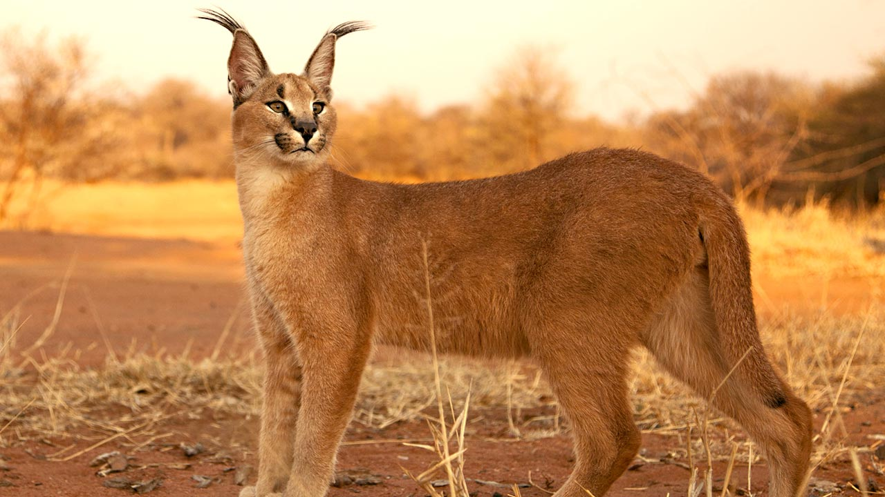

Karakale, znane również jako karakale płowe, są dzikimi kotami występującymi głównie w Afryce i na Bliskim Wschodzie. Charakteryzują się długimi, smukłymi ciałami, długimi nogami i długim ogonem o czarnym zakończeniu. Ich sierść jest krótka i gęsta, zwykle o barwie piaskowej z plamami lub pręgami. Karakale są doskonałymi myśliwymi, potrafiącymi skakać na znaczną wysokość, co umożliwia im polowanie na ptaki oraz szybkie zwierzęta. Są również zdolne do wspinaczki, co pomaga im w polowaniach na drzewa. Te zwinnego drapieżniki są zazwyczaj samotnikami i prowadzą nocny tryb życia. Pomimo tego, że ich populacja jest stosunkowo stabilna, karakale są zagrożone utratą środowiska naturalnego oraz kłusownictwem.

Żywiąc się głównie małymi ssakami, ptakami i gryzoniami, karakale są wyjątkowo zręcznymi myśliwymi. Ich długie nogi i elastyczne ciała pozwalają im na skoki na znaczną wysokość, co umożliwia im schwytanie ptaków znajdujących się na gałęziach drzew lub na ziemi. Oprócz tego potrafią one wykorzystać swą szybkość i zwinność do polowań na króliki, zające czy inne niewielkie ssaki.
Życie karakali stepowych to zazwyczaj samotne istnienie. Samce i samice spotykają się jedynie w okresie godowym. Podczas tego czasu, samce mogą prowadzić ożywione walki o prawo do rozrodu. Po okresie godowym samica rodzi zazwyczaj od jednego do trzech młodych, które opiekuje się przez około rok.
Karakale są zwierzętami nocnymi, co oznacza, że większość ich aktywności polowania i żerowania ma miejsce po zmroku. W ciągu dnia karakale zazwyczaj odpoczywają, ukrywając się w gęstej roślinności lub skalistych kryjówkach, aby uniknąć upalnego słońca. Ich sierść, składająca się z krótkiego, gęstego futra, pomaga regulować ich temperaturę ciała w zmiennej klimatycznie stepowej scenerii.
Karakale są znane ze swej zdolności do adaptacji do różnorodnych środowisk, co obejmuje również zdolność do wspinaczki. Często wspinają się na drzewa lub skały, by skorzystać z lepszego punktu obserwacyjnego podczas polowania. Ich doskonałe zrównoważenie i siła umożliwiają im zdobywanie zdobyczy w trudno dostępnych miejscach.
Niestety, jak wiele dzikich zwierząt, karakale stepowe są zagrożone utratą swojego naturalnego środowiska oraz kłusownictwem. Nielegalne polowania na nie oraz degradacja siedlisk są głównymi czynnikami wpływającymi na spadek populacji tych pięknych drapieżników. Działania na rzecz ochrony ich siedlisk oraz edukacja społeczna na temat ich znaczenia dla ekosystemów są kluczowe dla zachowania tych zwierząt w dzikiej naturze.